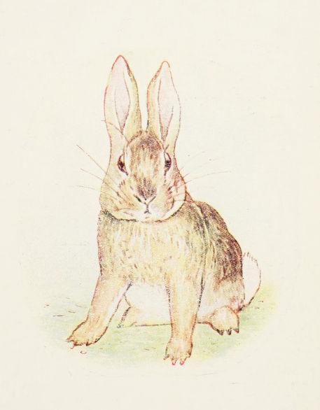
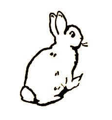
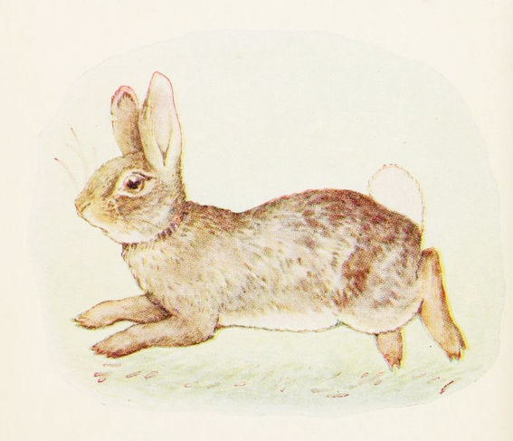
こちらは ごくあくウサギ。 ほら、 げひんな おひげに するどい つめ、 それに あの さかだった しっぽ。

こちらは おっとりウサギ。 てには おかあさんから もらった ニンジンです。
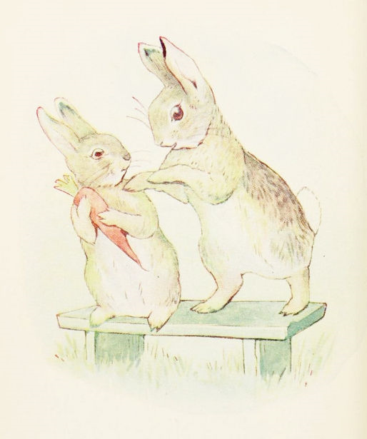
わるウサギが ニンジンを ほしがりました。
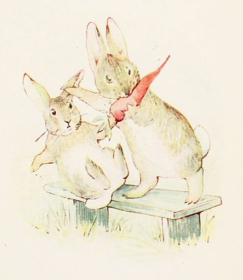
それで「ください」とも いわずに かっぱらって！
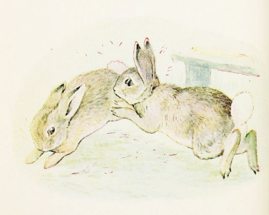
しかも やさウサギを めためたに ひっかいたのです。
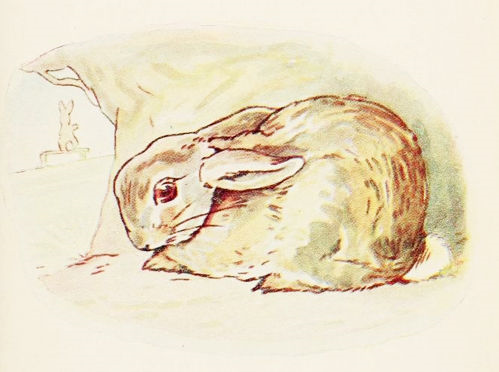
やさウサギは ほうほうのていで、 あなに にげこみました。 しゅんと しています。
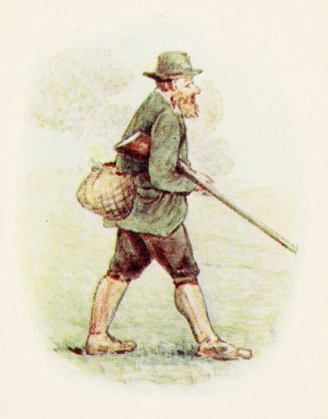
こちらは てっぽうを かかえた にんげん。
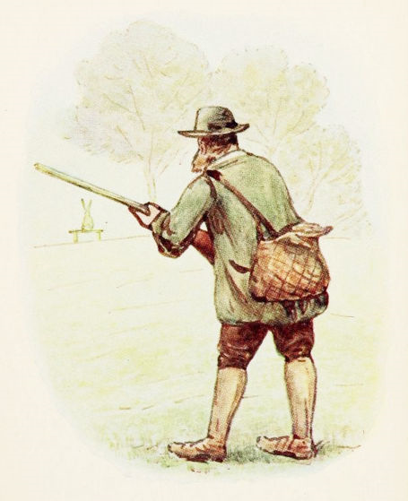
めのまえで ながいすに なにかが おすわりしています。 もしや かわった とりさんかな

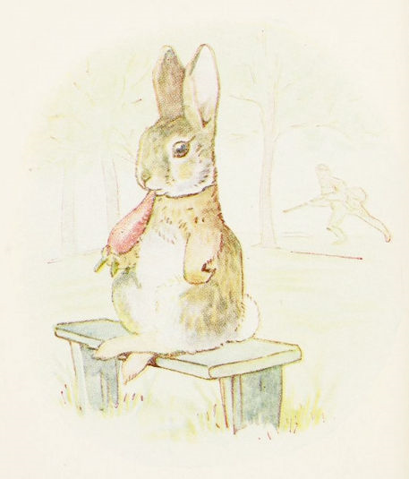
にんげんが きのうらから そろり しのびよります。
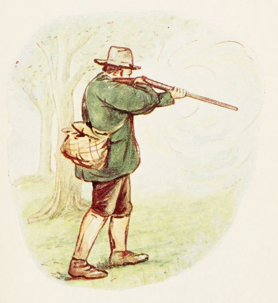
それから てっぽうを ぶっぱなす ―― ばーん！
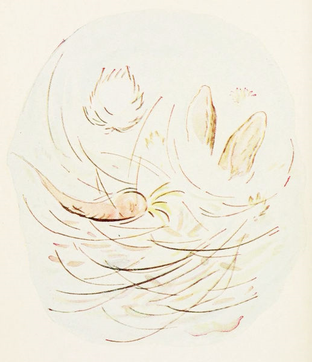
すると こうなりまして ――
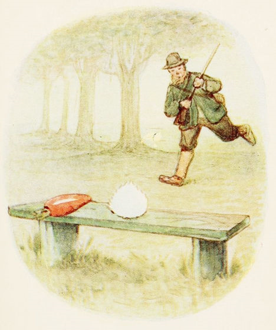
ところが ながいすの うえには きづけば これだけ。 てっぽうを てに かけよります。
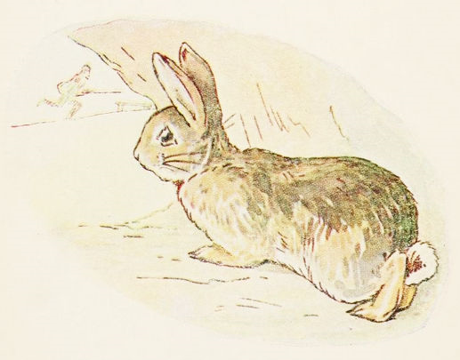
あなから ようすを うかがっていた やさウサギ ……

…… そして めのさきには わるウサギが なみだ ぽろぽろ はしるさま ―― しっぽも ひげも ないままに！
（おしまい）